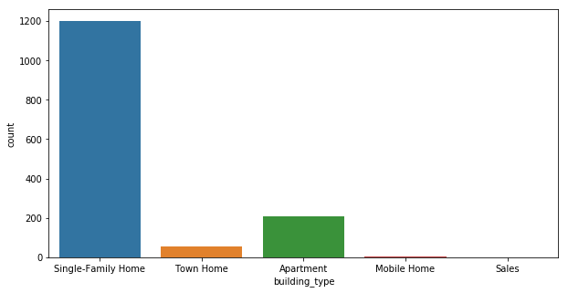
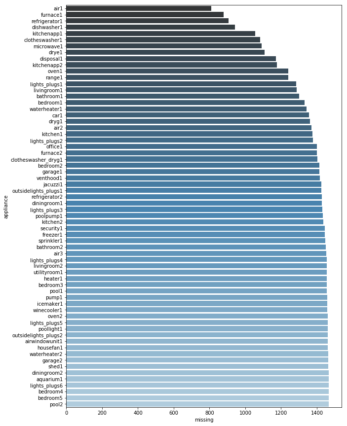
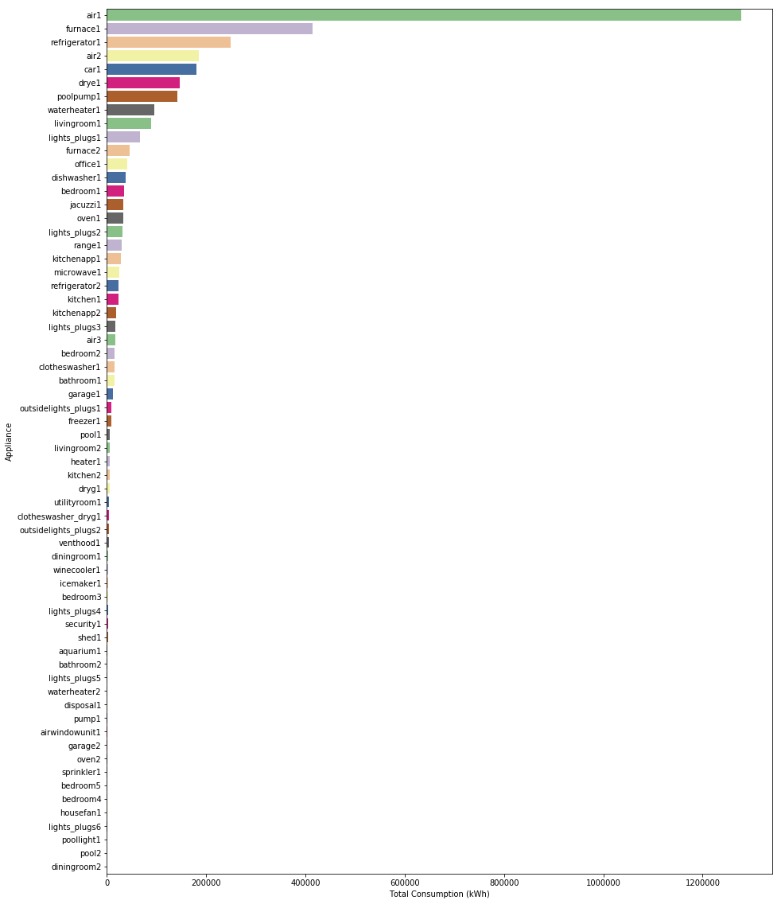
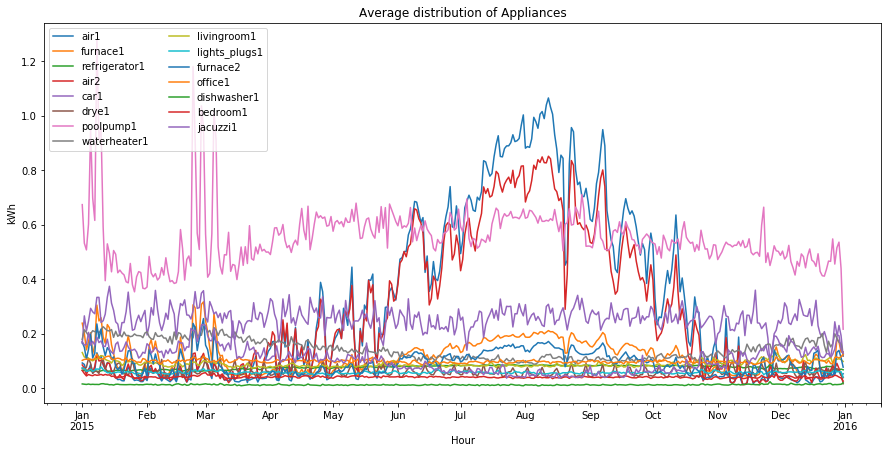
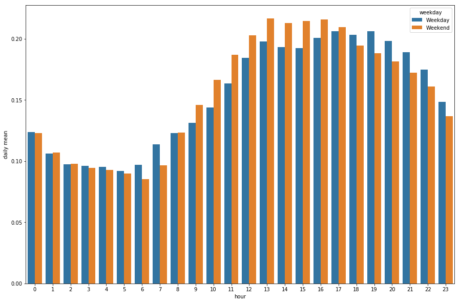

Fig 1. Below shows the Bar Chart for the number of households in state. We can see that texas has the highest number of house in the dataset(Left). Due computational resource only houses in Texas , Colorado and California were use(Right).


Fig 2. Building Type.
Bar shows the type of buildings in the dataset.
There are five types of buildings but the Single-Family Home is the most common

Fig 3. The number of missing data for each appliance
Fig 4. Total consumption for each appliance The graph shows the air condition is the most consumed appliance follwed by the furnace and refigerator. The rest consumes less amount of energy this is also due to the missing values shown above
Fig 5. Distribution Appliances consumption by month At the beging of the year,poolpump tops as the most consumed appliance going above 1.2kWh in Jan and Mar but towards the end of the year it fall and between 0.4 kWh to 0.6Kwh. Also the air (air2 and air2) at the begining of the of the were low, but between june and oct the consumption size keeps increases and alls after oct.

Fig 6. Average daily consumption. Between the Hour of 12:00 t0 5:00am the average consumption is the same between the weekday and weekend and also it begins to decrease and gradually increases by 6:00am. By 9am the electricity usage for weekend is higher than the Weekday, until when it starts to decrease at 18:00pm
